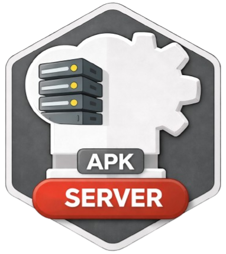

PROJECT

ZZX-LABS R&D // SOFTWARE // WEB MIRROR
CyberChefAPK-Server
Local/LAN CyberChef Android client companion with trusted-host configuration, localhost/private-LAN validation, server health checks, TLS policy metadata, constrained navigation, and portable lab configuration export.
ANDROID // LOCAL SERVER CYBERCHEF
CyberChefAPK-Server Workbench
LOCALHOST / LANTRUSTED HOSTSTLS POLICYHEALTH: CORS-DEPENDENT
The local transform subset remains available independently of the configured server.
TRUST BOUNDARY
No credentials stored
Host allowlisting and TLS policy are modeled without asking for server passwords, tokens, or client keys.